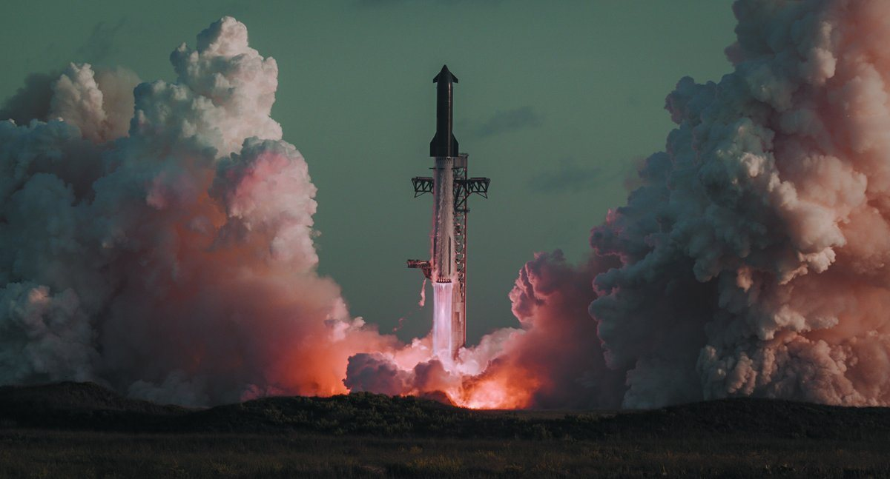
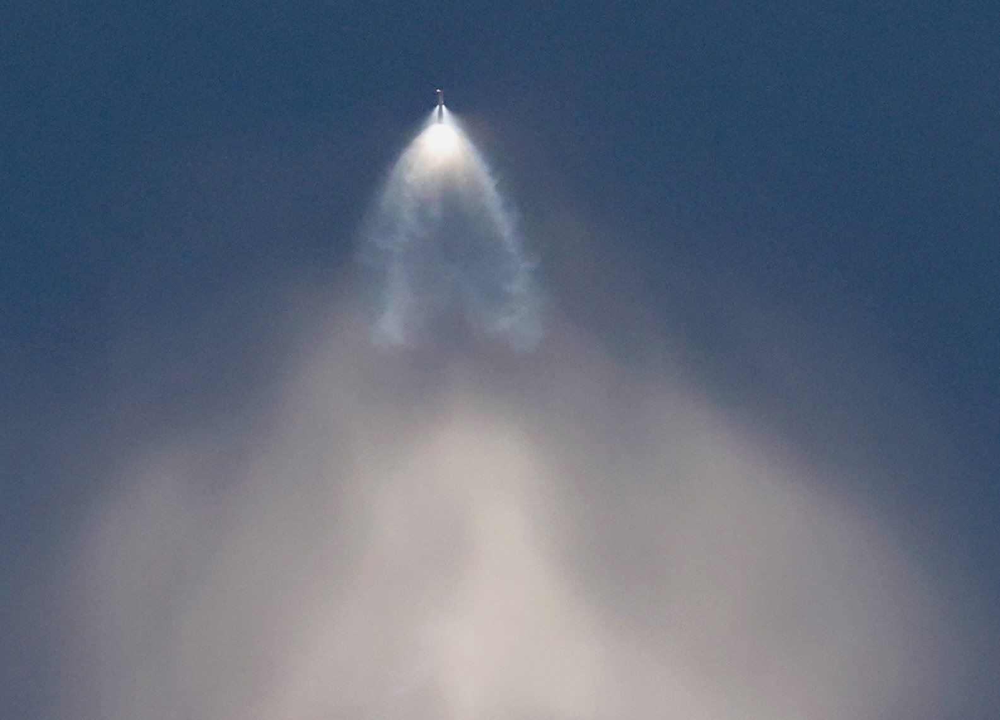

Dodici giorni dopo il primo volo orbitale di Starship, Elon Musk torna a parlare del Flight 14 e di ciò che viene dopo. Sabato 10 ottobre 2026, in un'intervista virtuale intitolata «What Comes Next for Humanity» all'evento X Takeover dei fan Tesla a Giga Texas (Austin), il fondatore di SpaceX ridimensiona l'anomalia al motore del 28 settembre, conferma la tenuta dello scudo termico e fissa una finestra concreta per il Flight 15: «hopefully in 4-6 weeks», con un traguardo che finora non è mai riuscito a nessuno: catturare lo stadio superiore di un razzo orbitale.
Che cosa ha detto Musk sul glitch
Il passaggio più citato, ripreso subito su X, è netto: «That (flight 14) engine glitch doesn't seem to be too much of an issue. The heat shield was robust.» In italiano: il glitch al motore del Flight 14 non sembra un problema troppo serio, e lo scudo termico si è dimostrato robusto. Non è un comunicato di volo né un rapporto tecnico completo: è una valutazione pubblica del programma, data a meno di due settimane dal debutto orbitale.
Nella stessa conversazione Musk collega l'anomalia al software del computer di un solo motore. Il team, ha spiegato, aveva giudicato il rischio abbastanza basso da proseguire verso l'orbita. Allo stesso tempo insiste sulla necessità di un'affidabilità «molto alta» dei Raptor: il fatto che un singolo spegnimento anticipato non abbia bloccato la missione non equivale a dichiararlo accettabile in regime operativo. È la differenza fra un volo di prova che tollera un'anomalia e una macchina che dovrà volare spesso, con carico pagante e, un giorno, con equipaggio.
Il contesto tecnico è quello già noto dal resoconto SpaceX del 28 settembre. Durante l'ascesa di Ship 41 un Raptor vacuum si era spento in anticipo; i cinque motori restanti avevano compensato allungando la spinta e lo stadio aveva raggiunto comunque la traiettoria suborbitale prevista. Dopo una valutazione a bordo, il controllo di volo aveva dato il via libera alle operazioni orbitali: un Raptor a livello del mare aveva acceso la manovra di inserzione, e Starship era entrata in orbita terrestre per la prima volta. Per precauzione, dopo il rilascio di 26 satelliti Starlink V3, la missione era stata accorciata rispetto al profilo multi-orbita originale, con deorbit anticipato e splashdown nel Pacifico settentrionale.

Lo scudo termico «robusto»
Il secondo pezzo della frase di Musk riguarda lo scudo termico. «The heat shield was robust» non è un dettaglio estetico: senza una protezione termica affidabile non esiste riuso della Ship, e senza riuso della Ship non esiste il modello economico di Starship. Sul Flight 14 tre dei ventisei Starlink V3 portavano telecamere pensate proprio per fotografare lo scudo in orbita e al rientro. È un anello di verifica intenzionale, non un optional di comunicazione.
Musk non pubblica in questa intervista numeri di piastrelle perse o mappe termiche. Dice che lo scudo ha tenuto, sullo stesso piano in cui ridimensiona il glitch motore. Per un programma che ha speso anni a rifinire tile, giunti e materiali dopo i rientri distruttivi dei primi voli, è un passaggio di tono tanto quanto di contenuto: dopo l'orbita e dopo i dati del rientro, la lettura pubblica è di fiducia, non di allarme.

Flight 15: catch della Ship, e poi riutilizzare lo stack
Il pezzo operativo dell'intervista è la roadmap. Musk colloca Flight 15 «hopefully in 4-6 weeks» dal 10 ottobre, quindi in una finestra che cade grosso modo a metà-fine novembre, prima del Thanksgiving americano. Il grande traguardo, «which is hopefully flight 15, is to catch the ship, making it the first full recovery of an orbital class rocket»: catturare lo stadio superiore e ottenere così il primo recupero completo di un razzo di classe orbitale.
SpaceX ha già preso Super Heavy con le braccia meccaniche della torre di integrazione (il sistema che in rete chiamano Mechazilla) in più occasioni. La Ship, invece, non è mai stata catturata: i voli precedenti si sono chiusi con splashdown controllati in oceano o con la perdita del veicolo. Il catch della Ship chiude il cerchio: booster e stadio superiore tornano entrambi a terra, sulla stessa torre da cui sono partiti.
Musk indica anche l'ambizione successiva: catturare booster e Ship sul Flight 15 e sperare di rifare volare la stessa coppia sul Flight 16. È il passaggio dal «siamo riusciti a recuperare» al «possiamo rifare volare in tempi ragionevoli». Non è ancora una cadenza da linea di produzione, ma è il test che decide se Starship può diventare una macchina industriale invece di una sequenza di prototipi monouso.
A terra, a Starbase, il lavoro su Ship 42 (prevista con Booster 22 per Flight 15) è già in corso da settimane: prove criogeniche, rimozione e reinstallazione motori, test ripetuti a Massey's. La pianificazione FAA riporta un obiettivo non prima dell'8 novembre per Flight 15, in ritardo rispetto a una precedente ipotesi di metà ottobre. Musk non conferma quella data: parla di speranza e di una finestra di quattro-sei settimane, non di un countdown chiuso.

Perché conta adesso
Flight 14 aveva già spostato l'asticella: orbita, carico operativo (26 Starlink V3), rientro e splashdown. Le parole del 10 ottobre chiudono il capitolo «c'era un problema motore?» con una risposta pubblica rilassata, e spostano l'attenzione sul pezzo ancora inedito: recuperare la Ship. Se Flight 15 riuscirà il catch, SpaceX potrà parlare di riuso completo in termini di fatto, non di roadmap. Se non riuscirà al primo colpo, Musk ha già in passato indicato probabilità intorno al 50-60 per cento per un primo tentativo riuscito: il programma tratta il fallimento di un catch come ipotesi di lavoro, non come tabù.
| Data | Fase | Che cosa succede |
|---|---|---|
| 28 settembre | Flight 14 | Primo volo orbitale; 26 Starlink V3; spegnimento anticipato di un RVac; deorbit anticipato per precauzione |
| 30 settembre | Resoconto SpaceX | Galleria ufficiale e sintesi della missione pubblicate dall'azienda |
| inizio ottobre | Ship 42 | Prove a Massey's / Megabay in vista di Flight 15 (Booster 22 + Ship 42) |
| 10 ottobre | X Takeover / Musk | Glitch «not too much of an issue»; scudo «robust»; Flight 15 in 4-6 settimane; catch della Ship |
| FAA (pianificazione) | Flight 15 | Obiettivo indicato non prima dell'8 novembre (non è una data SpaceX) |
Cosa non è ancora deciso
Restano fuori da questa pagina una data di lancio firmata da SpaceX, i dettagli tecnici completi del software del motore e qualsiasi garanzia sul successo del primo catch. Musk parla al condizionale («hopefully») e la FAA pubblica finestre di pianificazione, non autorizzazioni al secondo. Il dossier sul lancio SDA T1TL-A di ieri passa all'archivio Notizie: in primo piano restano le parole di Musk sul Flight 14 e il prossimo salto, catturare la Ship.
Fonti pubbliche e tracce
Ultimo aggiornamento editoriale: 11 ottobre 2026. Nel corpo non si ripete la fonte a ogni frase: le tracce sono raccolte qui.
- Sawyer Merritt su X, 10 ottobre 2026 (21:58 UTC): citazione estesa di Musk su glitch Flight 14, scudo termico, Flight 15 in 4-6 settimane e catch della Ship come «first full recovery of an orbital class rocket».
- Tesla Owners Silicon Valley / X Takeover: contesto dell'intervista virtuale «What Comes Next for Humanity» all'evento di Giga Texas del 10 ottobre 2026.
- TeslaNorth, Sarah Lee-Jones, 10 ottobre 2026: sintesi dell'intervista (software su un motore, rischio basso, catch di booster e Ship su Flight 15, rifly su Flight 16, finestra pre-Thanksgiving).
- Visit Starbase su X, 10 ottobre 2026: glitch descritto come problema software di un motore; SpaceX vuole affidabilità motori molto alta.
- SpaceX, pagina missione Starship Flight 14: resoconto ufficiale (orbita, 26 Starlink V3, spegnimento RVac, deorbit anticipato, splashdown).
- SpaceX su X, 30 settembre 2026: galleria fotografica ufficiale del Flight 14.
- Wikipedia, Starship flight 14: cronologia eventi e parametri orbitali (verifica crociata).
- Pianificazione FAA: obiettivo Flight 15 non prima dell'8 novembre 2026 (resoconti del 10 ottobre; non è una data SpaceX).
Fotografie utilizzabili
Copertina e seconda figura: foto ufficiali SpaceX del Flight 14 (30 settembre), credito SpaceX e dicitura «uso editoriale non commerciale». Terza figura: scudo termico Ship 39, foto governo USA in pubblico dominio. Quarta: plume Super Heavy IFT-5 (Steve Jurvetson, CC BY 2.0) per il contesto del catch. Dettagli in scheda dei crediti fotografici.
Apri il dossier SDA T1TL-A archiviato · Archivio Notizie · Torna a SpaceX